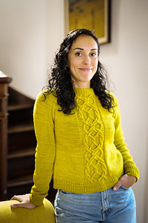
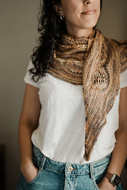
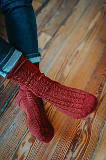
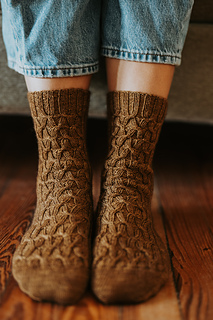
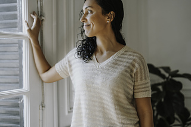
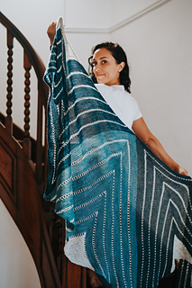

Knitwear Design · Est. 2010
Original knitwear patterns for the modern maker. Each piece is a quiet story of texture, warmth, and the meditative joy of creating something beautiful with your own hands.

Latest Release
Streets ofShawl · Fingering Weight

Shawl
The Lone Skein

Pullover
Grace Notes

Wrap
Lace & Fade Boxy
Accessory
Gossamer

Knitting is my dream job and I mean that literally. Every morning I wake up thinking about texture, yarn weight, the way a stitch behaves in the light. I design because I simply cannot not design.
I'm a mother of two, a traveller, and someone who believes in the meditative, almost spiritual quality of making something with your hands. My patterns are designed to be accessible but never boring. Ambitious but never intimidating.
Based wherever the best wool takes me. Sharing everything I make with knitters around the world.

Inspired by warm light falling between the narrow streets of the Gothic Quarter at golden hour. This shawl is an ode to wandering, loose, flowing, and entirely unforgettable.